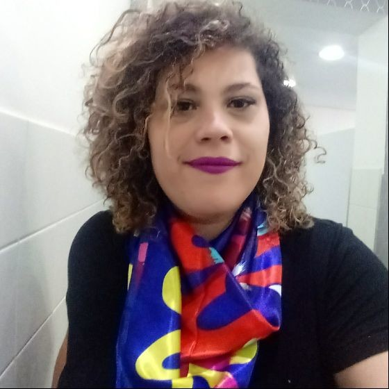

Sobre mim
Me chamo Domenica Janete de Freitas, tenho 28 anos, moro em São Paulo/SP, sou formada em Sistemas de Informação pela Uninove e atualmente sou estudante de Full Stack (Java) + Cloud Porto pela Soul Code e esse é meu Portifólio.
Me chamo Domenica Janete de Freitas, tenho 28 anos, moro em São Paulo/SP, sou formada em Sistemas de Informação pela Uninove e atualmente sou estudante de Full Stack (Java) + Cloud Porto pela Soul Code e esse é meu Portifólio.
Sempre fui uma pessoa muito comunicativa, no começo tentei entrar na área de RH mas não me adaptei, a procura de uma área a minha cunhada Lilian de Sousa me indicou a área de programação onde ela já trabalhava há um bom tempo, pesquisei sobre a área e gostei muito da criação de programas e sites, iniciei Sistemas de Informação na Anhanguera onde conheci o professor Eduardo onde obtive os primeiros conhecimento com programação, depois troquei de faculdade e fui para Uninove onde tive vários professores incríveis e terminei a faculdade em Dezembro de 2022.
Tive uma grande oportunidade de estagiar na área de suporte na subprefeitura do M’Boi Mirim, onde eu conheci meus dois chefes, Marcelo e Irapuan mesmo sendo na área de suporte aos usuários o foco, aprendi sobres gestão e programação; depois tive a oportunidade de estagiar também na BrasilPrev onde atuei com: conhecimento do conteúdo sistêmico de Previdência privada, apoio ao atendimento de TK’s, desenvolvimento potencial Ágil no atendimento de causa raiz junto a Squad Ágil do time, auxilio na implementação de rotinas de testes do time e apoio na monitoração e validação das rotinas sistêmicas diárias.
Tenho 18 anos de experiência na área de TI sendo 16 anos na área de analista e desenvolvimento de sistemas. Especialista backend. Micro serviço, monitoramento de serviços (splunk, grafana, phometeus, graylog, etc) e cloud (aws e Azure) . Conhecimento avançados nas linguagens c#, Java e Kotlin. Banco de dados relacionais e nãos relacionais. SOLID, CLEAN CODE,CLEAN ARCHTETURE. Mensageria Kafka, sns, sqs. Versionamento git (git flow e base trunk).
do_kynha@hotmail.com👈